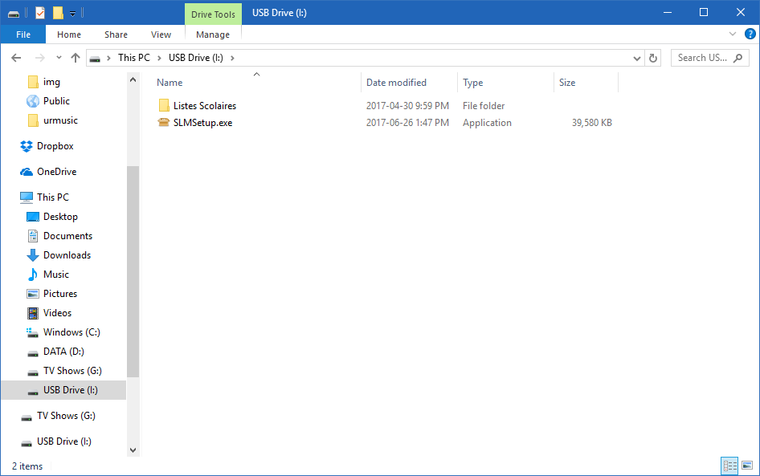

Préparation¶
Voici quelques étapes de préparation importantes avant de pouvoir commencer à utiliser le programme.
Matériel requis¶
Pour assurer le bon fonctionnement du programme, assurez-vous d'avoir l'équipement suivant en place :
- Un ordinateur Tout-en-un, préférablement avec un écran tactile: cela facillitera l'interaction des clients avec le programme.
- Une imprimante monochrome, préférablement laser: pour imprimer les listes scolaires.
- Une clé USB d'au moins 4 GB pour stocker les listes scolaires.
Important
Assurez-vous que l'ordinateur est complètement installé et que le mode de démonstration n'est pas activé, car ce mode efface les données personnelles automatiquement, ce qui prouverait catastrophique pour ce projet!
Note
Assurez-vous que le pilote de l'imprimante est installé et que cette dernière est réglée comme imprimante par défaut. Nous vous conseillons également de brancher l'imprimante directement par USB, pour éviter les complications du réseau. Certaines imprimantes configurent le format de papier A4 par défaut. Ce format est européen et peut causer du texte perdu sur les listes. Assurez-vous que le format lettre est bien le format configuré.
Préparation des listes scolaires¶
Cette étape est cruciale au bon fonctionnement de l'ensemble du projet et l'attention que vous y porterez vous évitera beaucoup de travail plus tard.
Préparer la clé USB¶
- Branchez votre clé USB dans un ordinateur (préférablement celui du Centre de Copies, car il dispose d'Adobe Acrobat, si nécessaire) et créez un dossier
Listes Scolaires. - Téléchargez le programme d'installation du Gestionnaire de Listes Scolaires
SLMSetup.exeet copiez-le sur la clé USB.
Vous trouverez toujours la dernière version à télécharger ici: (cliquez sur SLMSetup.exe): https://github.com/jfdesrochers/schoollistman/releases/latest

Ajouter les dossiers des écoles¶
Dans le dossier Listes Scolaires, créez des dossiers pour chaque école dont vous avez les listes :

Créer un PDF pour chaque classe¶
Enfin, dans chaque dossier d'école, créez un fichier PDF identifiant chaque classe et / ou chaque groupe. Il est important que chaque liste ait sont propre fichier et que le tout soit en format PDF. Utilisez Adobe Acrobat pour préparer le tout si nécessaire.

Attention !
Assurez-vous que le nom de vos dossiers / fichiers soit parfaitement adéquat: bonne ponctuation, bon usage des majuscules/minuscules et bon orthographe. Cela vous évitera d'avoir à tout renommer une fois dans le programme.
Une fois la préparation terminée, vous pouvez maintenant avancer à l'ordinateur tout-en-un et passer à la prochaine étape.